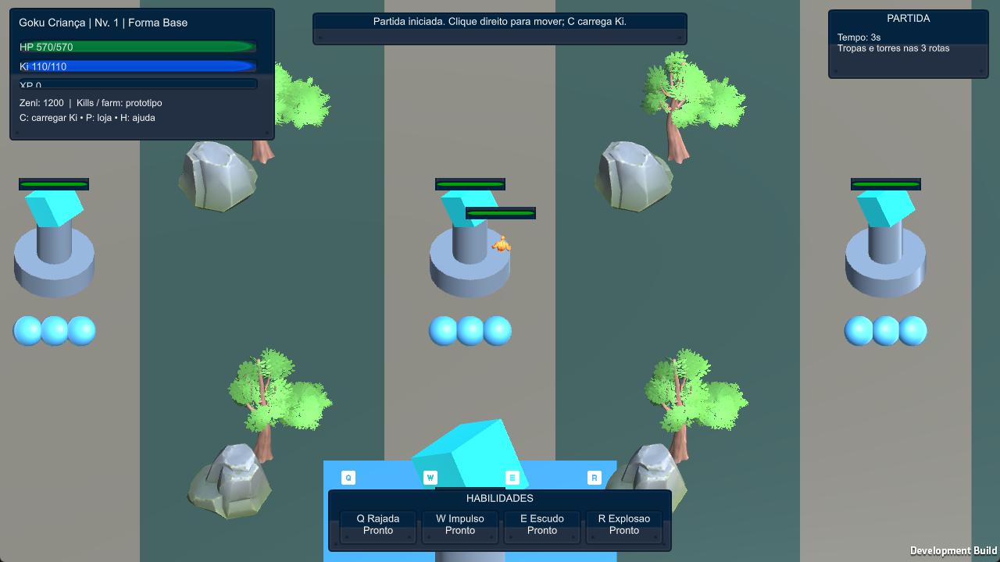
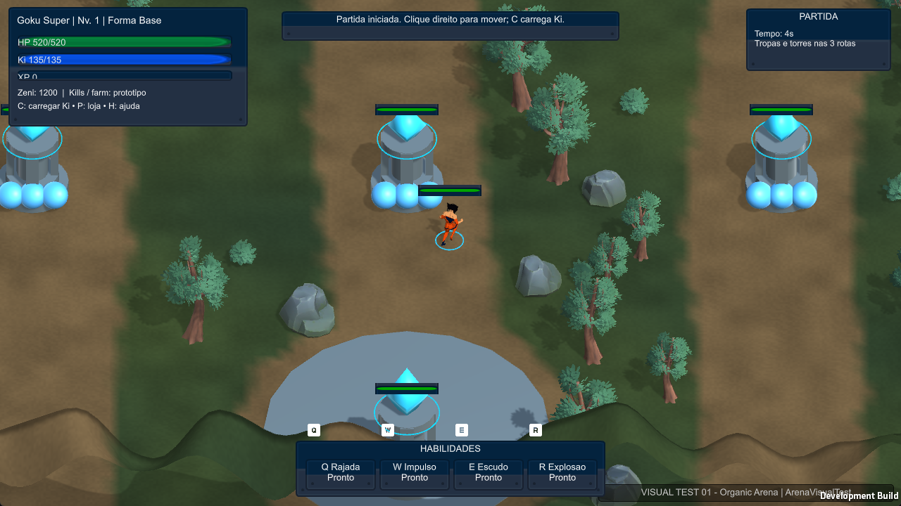
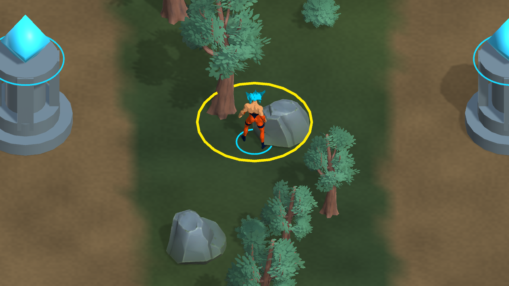
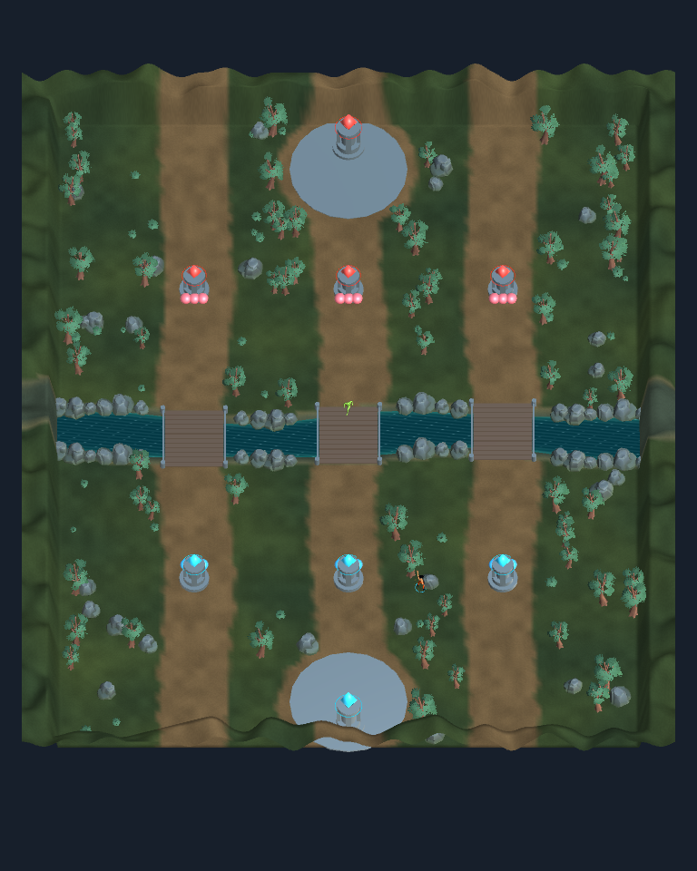

Capturas do projeto e do executável Unity. Nenhuma ilustração gerada substitui o resultado. A build inicia o campeão lógico GKU_SUPER com um lutador genérico CC0 estilizado. O mapa continua preservando as três rotas e regras existentes.




Os testes fornecem XP por GameWorld.GrantExperience para acelerar a verificação; não escrevem FormId nem acrescentam atalho de transformação à build. No jogo, as formas continuam dependendo de XP/nível.